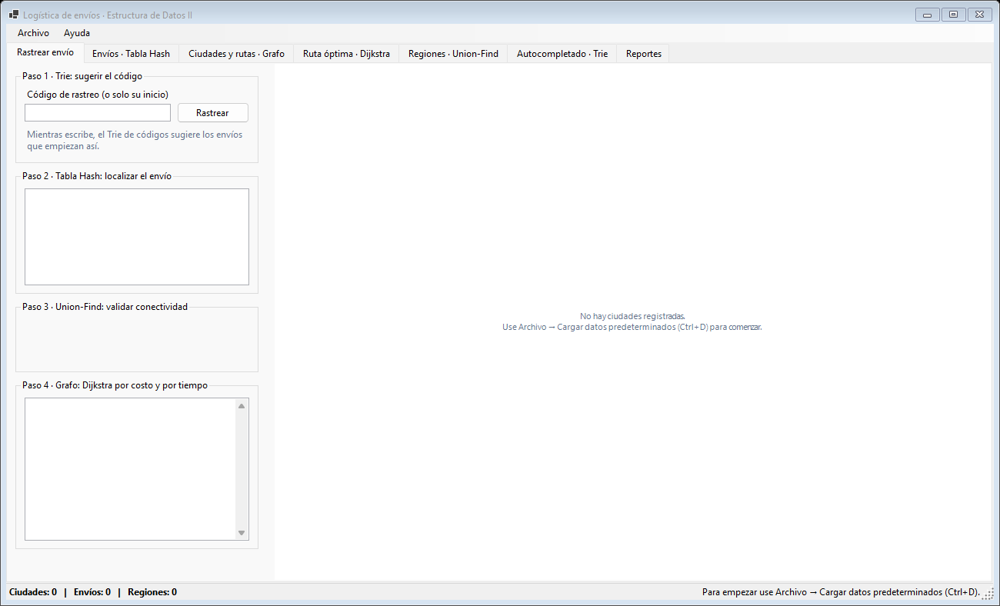
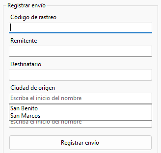
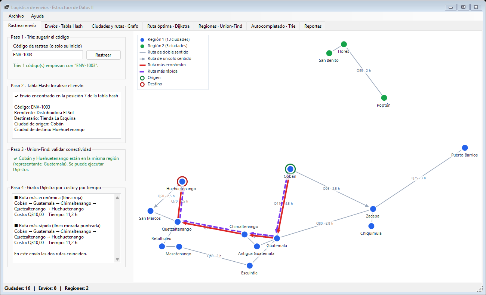
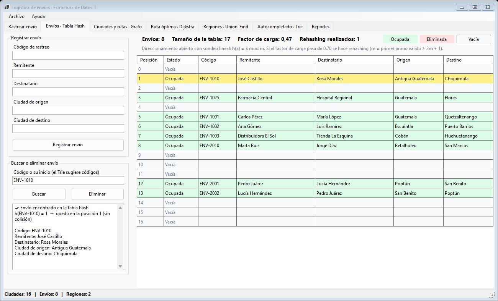
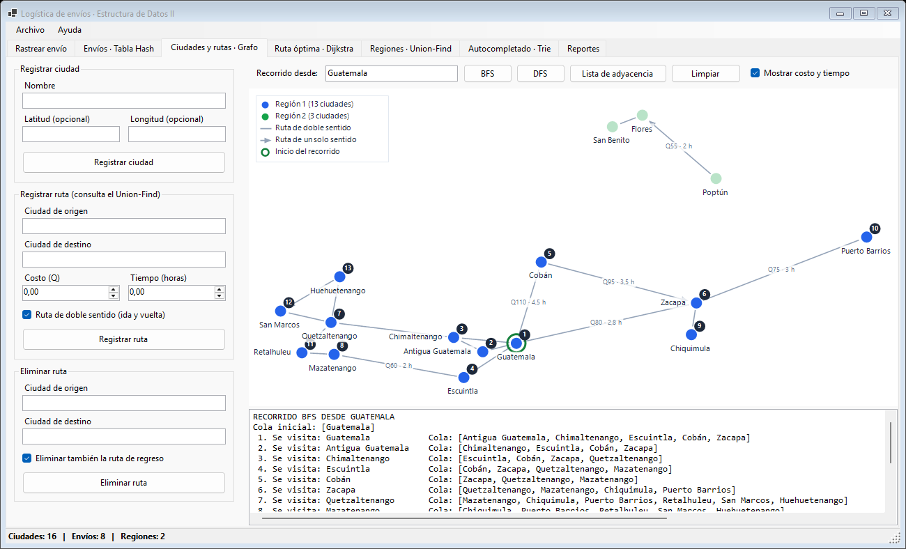
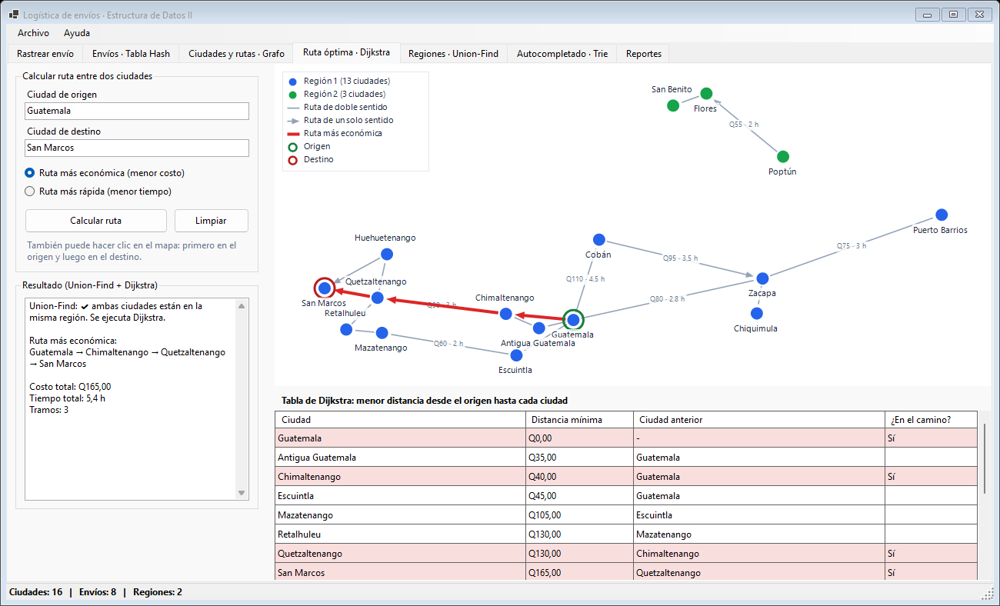
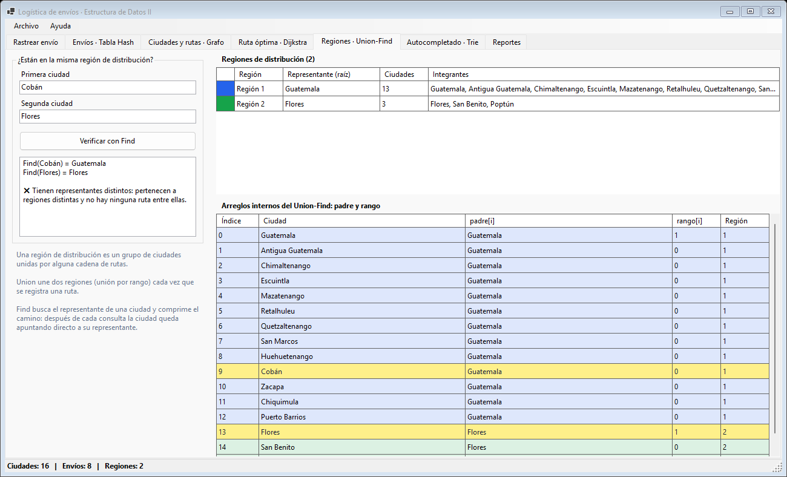
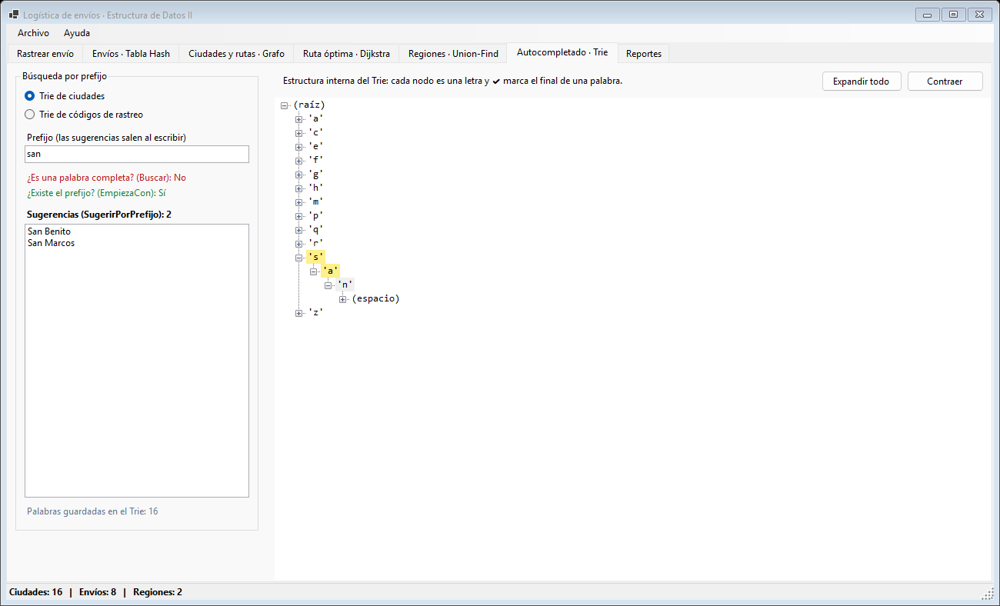
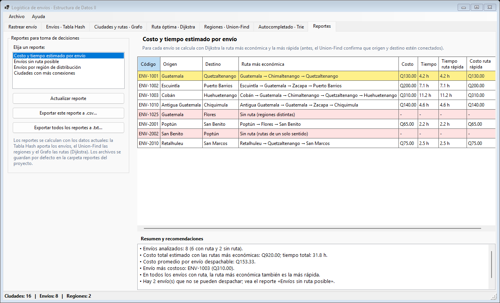

| Escenario | Logística de envíos |
| Versión | 1.0 · Windows |
| Integrantes | Ángel · Johann · Alexis |
| Fecha | Noviembre de 2026 |
El sistema ayuda a una empresa de paquetería a controlar sus envíos entre ciudades del país. Con él se puede:
El sistema tiene dos formas de uso con las mismas funciones: una interfaz gráfica (ventana con pestañas y mapa) y un menú de consola. Este manual explica las dos.
LogisticaEnvios.sln.LogisticaEnvios.GUI (interfaz gráfica) o sobre
LogisticaEnvios.Consola (menú de consola) y elija Establecer como proyecto de inicio.En la carpeta donde está LogisticaEnvios.sln:
dotnet run --project LogisticaEnvios.GUI (interfaz gráfica) dotnet run --project LogisticaEnvios.Consola (menú de consola)
Primer paso: el programa inicia vacío. Cargue los datos de ejemplo con Archivo → Cargar datos predeterminados (Ctrl + D) en la interfaz gráfica, o con la opción 1 → 1 → Enter en la consola.
Los datos se guardan en tres archivos de texto separados por comas (.csv) dentro de la carpeta datos del
proyecto. Se pueden abrir y editar con el Bloc de notas o con Excel. La primera línea es el encabezado.
nombre,latitud,longitud Guatemala,14.6349,-90.5069 Cobán,15.4708,-90.3711 Flores,16.9300,-89.8917
La latitud y la longitud son opcionales; solo sirven para ubicar la ciudad en el mapa de la interfaz gráfica. Una línea puede tener solo el nombre. Si una ciudad no tiene coordenadas, el mapa la coloca en una fila en la parte de abajo.
origen,destino,costo,tiempo,sentido Guatemala,Cobán,110,4.5,D Cobán,Zacapa,95,3.5,U
D = doble sentido (ida y vuelta) · U = un solo sentido (de origen a destino). Si se
omite, se toma como doble sentido.codigo,remitente,destinatario,origen,destino ENV-1001,Carlos Pérez,María López,Guatemala,Quetzaltenango
ciudades.csv. Por eso el orden de carga es: ciudades,
rutas y envíos (la opción «Cargar carpeta» lo hace sola).datos con todo lo que hay en memoria.
La ventana tiene tres partes:
Todas las pestañas trabajan sobre los mismos datos: lo que se registra en una pestaña aparece de inmediato en las demás.
| Opción | Atajo | Qué hace |
|---|---|---|
| Cargar datos predeterminados | Ctrl+D | Carga ciudades.csv, rutas.csv y envios.csv de la carpeta datos del proyecto. |
| Cargar carpeta de datos... | Ctrl+O | Pide una carpeta y carga sus tres archivos en orden. |
| Cargar archivo de ciudades / rutas / envíos... | — | Carga un solo archivo y lo agrega a los datos actuales. |
| Guardar datos | Ctrl+S | Guarda todo en la carpeta datos del proyecto (la misma que se carga con Ctrl+D). |
| Guardar en otra carpeta... | — | Pide una carpeta y guarda ahí los tres archivos. |
| Vaciar todos los datos | — | Borra de la memoria las ciudades, rutas y envíos. Los archivos no se modifican. |
| Salir | — | Cierra el programa. |
Si ya hay datos cargados y se vuelve a cargar una carpeta, el programa pregunta: Sí vacía todo y carga de nuevo, No agrega los datos nuevos a los actuales y Cancelar no hace nada. Al terminar se muestra un resumen con cuántos registros se cargaron de cada archivo y el detalle de las líneas con error.
En Ayuda → Acerca del proyecto se muestran el curso, las estructuras utilizadas y los integrantes.

Los campos de ciudad y de código de rastreo muestran sugerencias mientras se escribe. Las sugerencias las da el Trie, sin importar mayúsculas ni minúsculas.
Muestra cómo trabajan juntas las cuatro estructuras para atender un envío, en cuatro pasos.

ENV-10) y elija una sugerencia. Presione
Rastrear o Enter.Si el envío va entre regiones distintas (por ejemplo ENV-1025, Guatemala → Flores), el paso 3 aparece en rojo y solo se marcan el origen y el destino en el mapa. Consulte el reporte «Envíos sin ruta posible» para saber qué ruta conviene agregar.

h(código), y la posición donde quedó realmente (si hubo colisión, se indica sondeo
lineal).Cada fila es una posición de la tabla hash: Ocupada, Eliminada o Vacía. Arriba se indican la cantidad de envíos, el tamaño de la tabla, el factor de carga y cuántas veces se ha agrandado la tabla (rehashing).

| Sección | Cómo se usa |
|---|---|
| Registrar ciudad | Escriba el nombre y, si desea verla en su posición del mapa, la latitud y la longitud (por ejemplo 14.63 y -90.51). Deje ambas vacías si no las conoce. |
| Registrar ruta | Elija origen y destino, escriba el costo (Q) y el tiempo (horas) y marque «doble sentido» si la ruta es de ida y vuelta. El mensaje indica si las ciudades ya estaban en la misma región o si la nueva ruta une dos regiones. |
| Eliminar ruta | Elija origen y destino. Con la casilla marcada también se elimina la ruta de regreso. Las regiones se recalculan automáticamente. |
| Recorrido desde · BFS / DFS | Elija la ciudad de inicio y presione BFS (por niveles) o DFS (en profundidad). El mapa numera las ciudades en el orden en que se visitan y el cuadro inferior muestra cada paso (en BFS, también el contenido de la cola). Las ciudades que no se alcanzan aparecen apagadas. |
| Lista de adyacencia | Muestra cada ciudad con sus rutas de salida, costo y tiempo. |
| Limpiar | Quita el recorrido del mapa y borra el cuadro inferior. |
| Mostrar costo y tiempo | Muestra u oculta los valores sobre las rutas del mapa. |

La tabla de abajo muestra, para cada ciudad, la menor distancia desde el origen y la ciudad anterior en ese camino. Las filas en rojo claro forman el camino elegido y «∞» indica que no se puede llegar a esa ciudad.



Elija un reporte de la lista. La tabla muestra los datos y el cuadro inferior un resumen con conclusiones y recomendaciones. Los reportes se calculan con los datos actuales; Actualizar reporte los vuelve a calcular.
| Reporte | Para qué sirve |
|---|---|
| Costo y tiempo estimado por envío | Costo y tiempo de cada envío por su ruta más económica, comparado con la más rápida; costo total, promedio y envío más costoso. Las filas en rojo son envíos sin ruta. |
| Envíos sin ruta posible | Envíos que hoy no se pueden despachar, el motivo y la acción recomendada, incluida la conexión más corta posible entre regiones. |
| Envíos por región de distribución | Cuántos envíos salen, llegan, se quedan dentro de cada región o van hacia otra. |
| Ciudades con más conexiones | Ranking de ciudades; sugiere el centro de distribución y señala ciudades que dependen de una sola ruta o a las que no llega ninguna. |
reportes del proyecto.La aplicación de consola ofrece las mismas funciones por medio de menús numerados. Escriba el número de la opción y presione Enter. En todos los submenús, 0 regresa al menú anterior.
# LOGÍSTICA DE ENVÍOS
Ciudades: 16 | Envíos: 8 | Regiones: 2
1. Cargar datos desde archivos
2. Ciudades y rutas (Grafo)
3. Envíos (Tabla Hash)
4. Regiones de distribución (Union-Find)
5. Autocompletado (Trie)
6. Rastrear envío y calcular su ruta (flujo integrado)
7. Guardar datos en archivos
8. Reportes para toma de decisiones
0. Salir
Seleccione una opción: _
Cuando el programa pide una ciudad o un código, puede escribir el nombre completo o solo su inicio:
¿Se refiere a "Cobán"? (s/n).s, si o sí; cualquier otra respuesta se toma como «no».| Opción | Descripción |
|---|---|
| 1. Cargar todo desde una carpeta | Carga ciudades, rutas y envíos de una carpeta. Con Enter usa la carpeta datos del proyecto. |
| 2 a 4. Cargar archivo de ciudades / rutas / envíos | Carga un solo archivo. Con Enter usa el de la carpeta datos. Puede pegar una ruta copiada con «Copiar como ruta de acceso» (las comillas se quitan solas). |
Seleccione una opción: 1 Ruta de la carpeta (Enter para usar la carpeta por defecto): [Enter] # CARGANDO CIUDADES Ciudades cargadas: 16 | Líneas con error: 0 # CARGANDO RUTAS Rutas cargadas: 18 | Líneas con error: 0 # CARGANDO ENVÍOS Envíos cargados: 8 | Líneas con error: 0
| Opción | Descripción |
|---|---|
| 1. Registrar ciudad | Pide el nombre y pregunta si desea ingresar latitud y longitud (opcional). |
| 2. Registrar ruta | Pide origen, destino, costo, tiempo y si es de doble sentido. Informa lo que respondió el Union-Find. |
| 3. Eliminar ruta | Pide origen y destino, y pregunta si también se elimina la ruta de regreso. |
| 4. Mostrar ciudades y rutas | Lista de adyacencia: cada ciudad con sus rutas de salida. |
| 5. Recorrido BFS · 6. Recorrido DFS | Pide la ciudad de inicio y muestra el orden de visita (en BFS, también la cola). |
| 7. Ruta más económica · 8. Ruta más rápida | Pide origen y destino; muestra la tabla de Dijkstra y el camino con su costo y tiempo. |
Seleccione una opción: 7 Ciudad de origen: Guatemala Ciudad de destino: Quetzaltenango Union-Find: ambas ciudades están en la misma región. Se ejecuta Dijkstra. # DIJKSTRA DESDE GUATEMALA (POR COSTO) Ciudad Distancia Anterior Guatemala Q0,00 - Antigua Guatemala Q35,00 Guatemala Chimaltenango Q40,00 Guatemala ... Flores ∞ - # RUTA MÁS ECONÓMICA Camino: Guatemala → Chimaltenango → Quetzaltenango Costo total: Q130,00 Tiempo total: 4,2 h
| Opción | Descripción |
|---|---|
| 1. Registrar envío | Pide código, remitente, destinatario, ciudad de origen y de destino (puede escribir solo el inicio). |
| 2. Buscar envío por código exacto | Busca el código tal como se escribe. |
| 3. Buscar envío por inicio del código | El Trie sugiere los códigos que empiezan así y la tabla hash muestra el elegido. |
| 4. Eliminar envío | Pide el código (o su inicio) y una confirmación. |
| 5. Mostrar tabla hash | Muestra cada posición (envío, VACÍO o ELIMINADO), el tamaño, el factor de carga y los rehashing. |
| Opción | Descripción |
|---|---|
| 1. Verificar si dos ciudades están en la misma región | Muestra el representante de cada ciudad y el resultado. |
| 2. Mostrar regiones | Cada región con su representante y sus ciudades. |
| 3. Mostrar arreglos padre y rango | Estado interno de la estructura. |
Primera ciudad: Cob ¿Se refiere a "Cobán"? (s/n): s Segunda ciudad: Flo ¿Se refiere a "Flores"? (s/n): s Representante de Cobán: Guatemala Representante de Flores: Flores Cobán y Flores pertenecen a regiones distintas.
| Opción | Descripción |
|---|---|
| 1. Sugerir ciudades por prefijo · 2. Sugerir códigos por prefijo | Lista las palabras que empiezan con el prefijo. |
| 3. Verificar si una ciudad existe | Búsqueda exacta del nombre completo. |
| 4. Verificar si existe algún nombre con un prefijo | Indica si hay ciudades y si hay códigos que empiezan así. |
| 5. Mostrar todas las ciudades · 6. Mostrar todos los códigos | Listado completo en orden alfabético. |
Seleccione una opción: 1 Ingrese el prefijo: san Sugerencias (2): - San Benito - San Marcos
Es el flujo integrado: el Trie sugiere el código, la tabla hash localiza el envío, el Union-Find valida la conectividad y Dijkstra calcula la ruta según el criterio elegido (1 económica, 2 rápida o 3 ambas).
Código de rastreo (o su inicio): ENV-10 Sugerencias: 1. ENV-1001 2. ENV-1002 3. ENV-1003 4. ENV-1010 5. ENV-1025 Seleccione un número (0 para cancelar): 2 # DATOS DEL ENVÍO Código de rastreo: ENV-1002 Remitente: Ana Gómez Destinatario: Luis Ramírez Ciudad de origen: Escuintla Ciudad de destino: Puerto Barrios 1. Ruta más económica 2. Ruta más rápida 3. Ambas Seleccione el criterio: 1 Union-Find: ambas ciudades están en la misma región. Se ejecuta Dijkstra. # RUTA MÁS ECONÓMICA Camino: Escuintla → Guatemala → Zacapa → Puerto Barrios Costo total: Q200,00 Tiempo total: 7,1 h
Pide la carpeta donde guardar; con Enter se guarda en la carpeta datos del proyecto y se reemplazan
ciudades.csv, rutas.csv y envios.csv.
| Opción | Descripción |
|---|---|
| 1 a 4 | Muestra un reporte: costos por envío, envíos sin ruta, envíos por región o ciudades con más conexiones. |
| 5. Mostrar todos los reportes | Muestra los cuatro, uno tras otro. |
| 6. Exportar todos los reportes a .txt | Pide la ruta del archivo; con Enter usa reportes\reportes.txt. |
| 7. Exportar un reporte a .csv | Pide el número del reporte y la ruta del archivo; con Enter usa la carpeta reportes. |
# ENVÍOS SIN RUTA POSIBLE Envíos que hoy no se pueden despachar, el motivo y la acción recomendada para atenderlos. Código Origen Destino Motivo -------- ---------- ------- ------------------------------------------------------------------ ENV-1025 Guatemala Flores Origen en la región 1 y destino en la región 2 (sin conexión entre ellas) ENV-2002 San Benito Poptún Misma región, pero las rutas de un solo sentido no permiten llegar Resumen: - 2 de 8 envíos no se pueden despachar con la red actual. - Prioridad: conectar la región 1 con la región 2 resolvería 1 envío(s). Conexión sugerida: Puerto Barrios – Poptún (≈ 111 km en línea recta).
En pantalla, la tabla incluye además la columna «Recomendación»; aquí se omitió por espacio.
| Mensaje | Causa | Qué hacer |
|---|---|---|
| La ciudad X ya existe. | Se intentó registrar un nombre repetido. | Use otro nombre o use la ciudad existente. |
| La ciudad X no existe. / La ciudad de origen o de destino no existe. | Nombre mal escrito o ciudad no registrada. | Elija la ciudad de las sugerencias o regístrela primero. |
| Una ciudad no puede tener una ruta hacia sí misma. | Origen y destino iguales. | Elija dos ciudades distintas. |
| El costo y el tiempo no pueden ser negativos. | Valor menor que 0. | Ingrese valores mayores o iguales a 0. |
| Ya existe una ruta de X hacia Y. | La ruta ya está registrada. | Para cambiarla, elimínela y regístrela de nuevo. |
| Ruta X → Y registrada. La ruta de regreso Y → X ya existía... | Se pidió doble sentido pero la vuelta ya existía. | Nada: la vuelta conserva sus propios valores. |
| Ya existe un envío con el código X. | El código de rastreo debe ser único. | Use otro código. |
| ... no pueden contener comas. | Hay una coma en un nombre o dato. | Quite la coma. |
| Debe indicar la latitud y la longitud, o ninguna de las dos. | Solo se escribió una coordenada. | Complete ambas o deje ambas vacías. |
| X y Y pertenecen a regiones distintas... no se ejecuta Dijkstra. | No hay ninguna cadena de rutas entre ellas. | Registre una ruta que una las dos regiones (vea el reporte «Envíos sin ruta posible»). |
| Las ciudades están en la misma región, pero por las rutas de un solo sentido no hay forma de llegar... | Las rutas existentes solo van en sentido contrario. | Registre la ruta de regreso o una de doble sentido. |
| No se encontró el archivo: ... | La ruta o el nombre del archivo no existen. | Revise la carpeta; los archivos deben llamarse ciudades.csv, rutas.csv y envios.csv. |
| Línea N: faltan datos (...) | La línea tiene menos columnas de las necesarias. | Corrija esa línea del archivo. |
| Línea N: el costo o el tiempo no es un número válido. | Texto donde se esperaba un número. | Escriba el número (con punto decimal). |
| You must install or update .NET to run this application. | La computadora no tiene .NET 8 ni una versión más nueva. | Instale .NET 8 o superior desde el sitio oficial de Microsoft. |
La región solo indica que las ciudades están conectadas por alguna cadena de rutas, sin importar el sentido. Si en el camino hay rutas de un solo sentido que van al revés, no se puede llegar. Ejemplo con los datos de ejemplo: de Poptún se puede ir a Flores, pero de San Benito no se puede llegar a Poptún.
En la carpeta datos del proyecto, al usar Archivo → Guardar datos (Ctrl+S) o
la opción 7 de la consola con Enter. Lo que no se guarda se pierde al cerrar el programa.
Sí. Prepare los tres archivos con el formato de la sección 3 y cárguelos con Archivo → Cargar carpeta de datos... o con la opción 1 de la consola.
Las ciudades se ubican según su latitud y longitud, pero el mapa estira cada eje para aprovechar el espacio y separa un poco las ciudades que quedarían encimadas (por ejemplo Flores y San Benito).
Use Archivo → Cargar datos predeterminados y responda Sí para vaciar los datos actuales. Si ya guardó cambios en la
carpeta datos, se cargarán esos cambios.
La más económica minimiza la suma de los costos (Q) y la más rápida la suma de los tiempos (horas). Pueden coincidir o no; en la pestaña «Rastrear envío» se ven las dos a la vez.